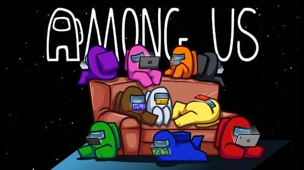
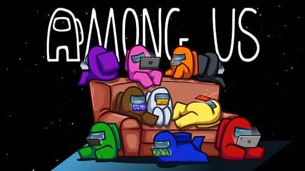
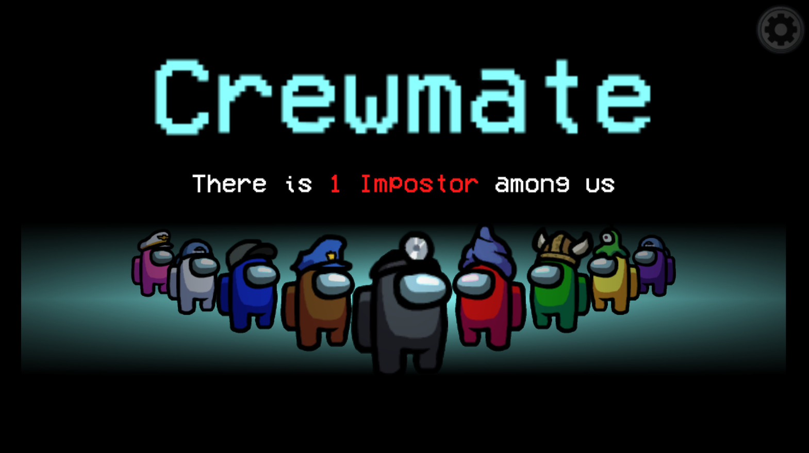
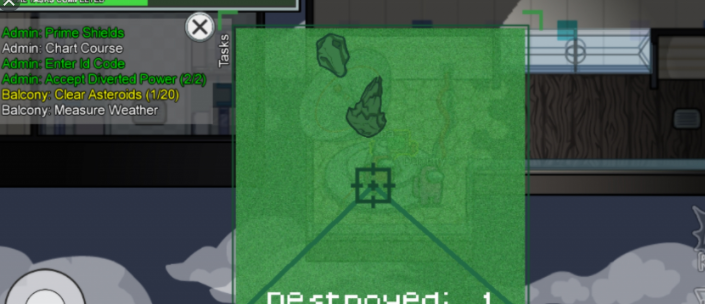
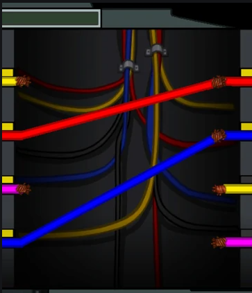

Among Us
Crewmate
Impostor
 

Among Us

Among us (Među nama) je internetska igra za društveni odbitak za više igrača koju je razvio i objavio američki studio za igre InnerSloth i objavljena 15. lipnja 2018.
Igra se odvija uokruženju tematskog prostora u kojem igrači uzimaju po jedan od dva uloge, od kojih su većina Crewmates, a unaprijed određeni broj Impostori.
Cilj Crewmate (Posade) je identificirati Impostore (varalice), eliminirati ih i izvršiti zadatke oko karte; cilj varalica je tajno sabotirati i ubiti Posadu
prije nego što izvrše sve svoje zadatke. Putem pluralnog glasanja igrači za koje se vjeruje da su samozvanci mogu biti uklonjeni iz igre. Ako su eliminirani
svi varalice ili su svi zadaci dovršeni, Posada će pobijediti; ako postoji jednak broj varalica i članova posade ili ako kritična sabotaža ostane neriješena, varalice pobjeđuju.
Iako je u početku objavljen 2018. godine za malu pažnju mainstream-a, priljev popularnosti dobio je 2020. godine.
Trailer:
Crewmate

Crewmate (Posada) je uloga koju dobivaju većina igrača, u najčešćim slučajevima, po postavkama igre to je 80% (8/10) igrača.
Pri početku runde, kreću raditi sa svojim zadatcima, koje moraju napraviti prije nego što Impostori (varalice) ubiju svu ostalu posadu.
Zadatci su u najčešćim slučajevima stvari kao naprimjer: spojiti točne žice u ostale priključke ili upucati asterioide što lete svemirom.
Samo posada može izvršavati zadatke, tako se mogu skupljati više posade na istim zadatcima i vjerovat jedni drugima, ali nikad se nemože biti 100% siguran


Impostor

Impostor (varalica) je uloga koju dobiva manjina igrača, prema istim postavkama 20% (2/10) igrača. Pri početku runde, pokušavaju se prilagoditi sa ostalim igračima,
stoje na mjestima di su zadani zadatci i prave se da ih izvode, ali sve što oni tu rade je to da traže savršenu priliku za neprimjetno ubojstvo.
Varalice za razliku od posade, koje imaju normalne mape imaju posebnu mapu terena namjenjenu za primjenu funkcije "sabotage" (sabotaža), kojom stvaraju zadatke koje
mogu raditi i varalice i posada, a to je da poprave to što je pokvareno sabotažom. to najčešće mogu biti svijetla ili reaktor, kojim posada izgubi igru ako se ne popravi.
Kroz cijelu igru moraju pamtiti koje su zadatke "radili" , i gdje su bili, za razliku od posade, koja naravno to zna jer zapravo izvršava zadatke.
Ponekad da bi pobjedili igru znaju ostati sa dijelom posade da bi ispali nedužni za ubojstvo koje se dogodilo.
Varalice isto mogu koristiti ventilaciju, da pobjegnu iz jedne prostorije u drugu, ali ih posada ponekad primjeti, i shvati da je varalica